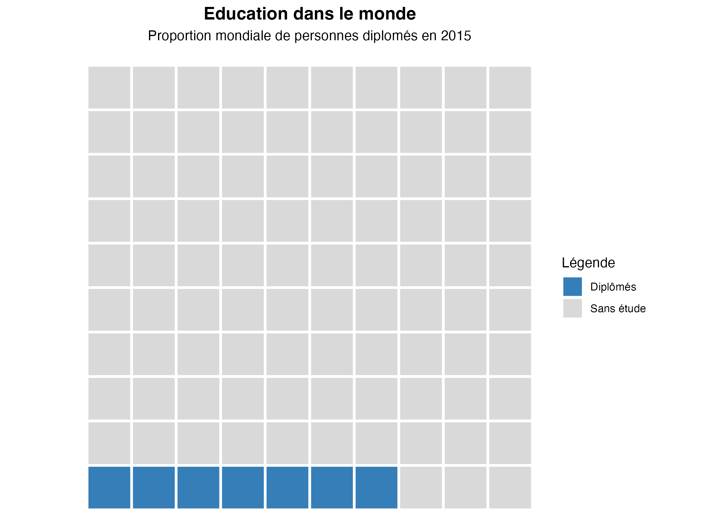

Code
# See tutorial# See tutorial
# See tutorialdata <- data %>%
mutate(Writers = factor(Writers, levels = unique(Writers)))
ggplot(data, aes(x = Writers, y = Value, color = Categorie, group = Categorie)) +
geom_line(linewidth = 1) +
geom_point(size = 3) +
scale_color_manual(values = c("#738ab3", "#fb7319", "grey65"), guide = "none") +
scale_x_discrete(labels = c("Repeat writers \n92K", "New writers\n45K"),
limits = c("Repeat_writers_92K", "New_writers_45K"),
expand = c(0,0)) +
scale_y_continuous(limit = c(0, 0.6)) +
labs(title = "Product X writers by promo type",
subtitle = "% OF TOTAL") +
theme(panel.background = element_rect(fill = "white"),
axis.text.y = element_blank(),
axis.ticks.y = element_blank(),
axis.title.y = element_blank(),
axis.title.x = element_blank(),
axis.text.x = element_text(size = 12, hjust = c(0,1)),
axis.line.x = element_line(color = "grey85"),
axis.ticks.x = element_line(color = "grey85"),
plot.title = element_text(size = 11, hjust = -1.5),
plot.subtitle = element_text(size = 9, hjust = -0.25),
plot.margin = unit(c(2, 10, 1, 2), "cm")) +
coord_cartesian(clip = "off") +
geom_text(data = data %>% filter(Writers == "Repeat_writers_92K"),
aes(label = scales::percent(Value)),
hjust = 1.4) +
geom_text(data = data %>% filter(Writers == "New_writers_45K"),
aes(label = scales::percent(Value)),
hjust = -0.4) +
geom_text(data = data %>% filter(Writers == "New_writers_45K"),
aes(label = Categorie),
hjust = -0.7) +
geom_textbox(x = 2.6, y = 0.3, width = unit(1, "npc"), hjust = 0,
aes(label = "<span style='font-size:12pt; color:black'>Though <span style='font-size:12pt; color:#738ab3'>**Promo A**</span> makes up the buggest segment overall, it contributes less to new writers than to repeat writers.</span> <br> <br> <span style='font-size:12pt; color:black'>Both <span style='font-size:12pt; color:#fb7319'>**Promo B**</span> and <span style='font-size:12pt; color:grey65'>**Promo C**</span> brought in higher proportions of new writers compared to repeat writers.</span> <br><br> <span style='font-size:12pt; color:black'>**How should we use this data for our future promotion strategy?** </span>", box.colour = "white")) +
geom_textbox(x = 0.79, y = 0.8, width = unit(3.2, "npc"), hjust = 0,
aes(label = "<span style='font-size:14pt; color:black;'>**There were 45K new writers in the past year.** </span> <br> <span style='font-size:10pt; color:grey25'>% The distribution across promo types looks different than repeat writers.</span>"), box.colour = "white")data <- data %>%
pivot_longer(!Year, names_to = "Type", values_to = "Values")
ggplot(data, aes(x = Year, y = Values, color = Type, group = Type)) +
geom_line(size = 1) +
geom_point(data = data %>% filter(Year == 2019),
aes(color = Type),
size = 2) +
geom_point(data = data %>% filter((Year == 2010 | Year == 2016), Type == "Referral"),
aes(color = Type),
size = 2) +
geom_text(data = data %>% filter(Year == 2019),
aes(label = scales::percent(Values)),
x = 2019.2,
hjust = 0,
fontface = "bold") +
geom_text(data = data %>% filter(Year == 2019),
aes(label = Type),
hjust = 0,
x = 2020,
fontface = "bold") +
labs(x = "FISCAL YEAR",
y = "CONVERSION RATE") +
scale_color_manual(values = c("grey55","#d54545","grey55"),
guide = "none") +
scale_y_continuous(limits = c(0,0.1),
breaks = seq(0,0.1,0.01),
labels = label_percent(accuracy = 1),
expand = c(0,0) ) +
scale_x_continuous(limits = c(2005,2019),
breaks = seq(2005,2019,1),
expand = c(0,0)) +
theme(panel.background = element_blank(),
axis.line = element_line(color = "grey"),
axis.ticks.x = element_line(color = "grey"),
axis.ticks.y = element_line(color = "grey"),
axis.text = element_text(color = "grey35"),
axis.title.x = element_text(color = "grey35", hjust = 0, size = 9 ),
axis.title.y = element_text(color = "grey35", hjust = 1, size = 9),
plot.margin = unit(c(2, 5, 1, 1), "cm")) +
coord_cartesian(clip = "off") +
geom_textbox(x = 2012.5, y = 0.11, width = unit(20, "cm"),
aes(label = "<span style='font-size:16pt; color:black'> Conversion rate over time: <span style='color:#d54545'>**referral decreasing markedly since 2010**</span> </span>"), box.color = "white") +
annotate("segment", x = 2010.02, xend = 2010.02, y = 0.025, yend = 0.053) +
annotate("segment", x = 2016.02, xend = 2016.02, y = 0.02, yend = 0.033) +
geom_textbox(x = 2009.8, y = 0.014, width = unit(7, "cm"),
aes(label = "<span style='font-size:8pt; color:#d54545'>**2010: all-time referral conversion high**</span><span style='font-size:8pt; color:grey35'> (5.5%). Strong partnerships historically meant steady coversion. Entry of competitor ABC has markedly impacted refferal quality: fewer are buying. </span>"), box.color = "white", hjust = 0) +
geom_textbox(x = 2015.8, y = 0.010, width = unit(4, "cm"),
aes(label = "<span style='font-size:8pt; color:#d54545'>**2016: new compaigns** </span> <span style='font-size:8pt; color:grey35'> led to brief uptick; steady decrease since then.</span>"), box.color = "white", hjust = 0)ggplot(dataset_2, aes(annee, valeurs, color = pays, size = pays)) +
geom_line() +
scale_color_manual(values = c("Switzerland" = "salmon",
"United States" = "lightblue"),
na.value = "grey50") +
scale_size_manual(values = c("Switzerland" = 1,
"United States" = 1),
na.value = 0.5) +
labs(title = "L'augmentation et la diminution de la consommation de cigarettes",
subtitle = "Ventes de cigarettes par adulte et par jour, dans certains pays. Les chiffres incluent les cigarettes manufacturées, \nainsi qu'une estimation du nombre de cigarettes roulées à la main, par adulte (15 ans et plus) et par jour.",
x = "",
y = "cigarettes vendues par jour et par adulte",
caption = "Source: National statistics, Our world in data") +
guides(size = FALSE) +
theme_bw() +
theme(plot.title = element_text( face = "bold", size =14),
plot.subtitle = element_text( face = "italic"))data <- data %>%
mutate(Date = str_replace_all(Date, ".19",""),
Date = factor(Date, levels = unique(Date)))
ggplot(data , aes(x = Date, y = Values)) +
geom_line(aes(color = Type, group = Type, linetype = Type), linewidth = 0.8) +
geom_point(data = data %>% filter( Type == "Indirect" , Values > 90),
color = "#fb7319", size = 2) +
geom_text(data = data %>% filter(Type == "Indirect" , Values > 90),
aes(label = Values), vjust = - 1, color = "#fb7319", fontface = "bold") +
scale_linetype_manual(values = c("solid", "longdash", "solid"), guide = "none") +
scale_color_manual(values = c("grey55", "grey55", "#738ab3"), guide="none") +
scale_y_continuous(limits = c(0, 135), breaks = seq(0, 135, 15), expand = c(0, 0))+
labs(x = "2019", y = "DAYS TO CLOSE") +
theme(panel.background = element_blank(),
axis.line = element_line(color = "grey"),
axis.ticks.x = element_blank(),
axis.ticks.y = element_line(color = "grey"),
axis.text = element_text(color = "grey35"),
axis.title.x = element_text(color = "grey35", hjust = 0.03, size = 9 ),
axis.title.y = element_text(color = "grey35", hjust = 1, size = 9),
plot.margin = unit(c(2, 2, 1, 1), "cm")) +
coord_cartesian(clip = "off") +
geom_textbox(x = 6, y = 145, width = unit(15, "cm"),
aes(label = "<span style='font-size:14pt; color:black'> Time to close deal: <span style='font-size:14pt; color:#fb7319'>**indirect sales missed goal 3 times**</span> </span>"), box.color = "white") +
geom_text(data = data %>% filter(Date == "DEC"),
aes(label = Type, color = Type), hjust = -0.1, fontface = "bold")data_1$month <- factor(data_1$month, levels = unique(data_1$month))
ggplot(data_1) +
geom_col(aes(month, rate, fill = month), color = "grey40") +
labs(title = "2019 monthly voluntary attrition rate",
x= "2019",
y= "ATTRITION RATE") +
scale_y_continuous(limits = c(0,0.01),
labels = scales::percent,
breaks = seq(0,0.01,0.001),
expand = c(0,0)) +
scale_fill_manual(values = c("APR" = "#ed1d25",
"JUL" = "#ec7c30",
"AUG" = "#ec7c30",
"NOV" = "#5d9bd1",
"DEC" = "#5d9bd1"),
na.value = "grey65") +
theme(panel.background = element_rect(fill = "white"),
axis.line = element_line(color = "grey65", linewidth = 0.1),
axis.ticks = element_line(color = "grey65", linewidth = 0.2),
axis.text = element_text(color = "grey45"),
axis.title = element_text(color = "grey45", size = 12),
axis.title.y = element_text(hjust = 1),
axis.title.x = element_text(hjust = 0),
plot.title = element_text(color = "grey25",
size = 18, margin=margin(0,0,15,0)),
plot.margin = unit(c(0.1, 6, 0.1, 0.1), "cm"),
legend.position="none") +
coord_cartesian(xlim = c(1, 12), clip = "off") +
annotate("text", hjust = 0, x = 13, y = 0.0095, size = 5,
label = "Highlights:") +
annotate("text", hjust = 0, x = 13, y = 0.0072, label = "In April there was a \nreorganization. No jobs \nwere eliminated, but \nmany people chose to \nleave.") +
annotate("text", hjust = 0, x = 13, y = 0.0038, label = "Attrition rates tend to be \nhigher in the Summer \nmonths when it is \ncommon for associates \nto leave to go back to \nschool.") +
annotate("text", hjust = 0, x = 13, y = 0.00075, label = "Attrition is typically low in \nNovember & December \ndue to the holidays.") +
annotate("rect", xmin=3.5, xmax= 18.7, ymin=0.006, ymax= 0.0084, fill = "#ed1d25", alpha= 0.15) +
annotate("rect", xmin=6.5, xmax= 18.7, ymin=0.0024, ymax= 0.0052, fill = "#ec7c30", alpha= 0.15) +
annotate("rect", xmin=10.5, xmax= 18.7, ymin=0, ymax= 0.0015, fill = "#5d9bd1", alpha= 0.15)dataset_1_c <- dataset_1 %>%
mutate(col_bar=ifelse(Value > 5.5, "1", "0"))
ggplot(dataset_1_c, aes(date, Value, fill=col_bar)) +
geom_col(width = 0.7, alpha = 0.9) +
scale_fill_manual(values = c("grey65", "red3")) +
theme(legend.position = "none") +
scale_x_discrete(breaks = c("2016/01","2017/01", "2018/01","2019/01", "2020/01") ,
labels = c(2016, 2017, 2018, 2019, 2020)) +
scale_y_continuous( breaks = c(0,2,4,6,8,10,12,14,16),
labels = c(0,2,4,6,8,10,12,14,16)) +
labs(title = "Taux de chômage aux États-Unis de 2016 à 2020",
subtitle = "Malgré une lente diminution depuis des années, le taux de chômage \na explosé à cause de l'épidémie du Covid.",
x = "",
y = "Taux de chômage (en %)",
caption = "Source: U.S. BUREAU OF LABOR STATISTICS") +
theme_bw() +
theme(legend.position = "none")ggplot( profits, aes(annees, valeur_milliards, fill = type)) +
geom_col() +
scale_fill_manual( values = c( "#bfa6a2", "#506b93")) +
labs(title = "Les profits volatils de la banque d'investissement",
subtitle = "Bénéfices de la banque d'investissement et des autres divisions de Credit Suisse depuis 2006",
x = "",
y = "",
caption = "Source: S&P Capital IQ & The Wall Street Journal") +
scale_x_continuous(breaks = c(2006,2008,2010,2012,2014,2016,2018,2020) ,
labels = c(2006,2008,2010,2012,2014,2016,2018,2020) ) +
scale_y_continuous(limits = c(-15,15), breaks = c(-15, -10, -5, 0, 5 ,10, 15) ,
labels = c("-15 milliards $", "-10", "-5", "0", "5" ,"10" , "15 milliards $") ) +
theme(plot.title = element_text( face = "bold"),
plot.caption = element_text( color ="#676767"),
axis.line.x = element_line(color= "black"),
axis.text = element_text( color ="gray"),
axis.ticks.y = element_blank(),
panel.background = element_blank(),
panel.grid.major.y = element_line(color = c("darkgray", "darkgray", "darkgray", "black", "darkgray", "darkgray", "darkgray"),
linewidth = 0.6,
linetype = c("dotted", "dotted", "dotted", "solid","dotted", "dotted", "dotted" )),
panel.grid.major.x = element_blank(),
legend.position = "none"
)
df <- df %>%
arrange(moyenne) %>%
mutate(pays = factor(pays, pays))
ggplot(df) +
geom_segment(aes(x = pays, xend = pays, y = a_1950, yend = a_2019), color = "grey") +
geom_point(aes(x = pays, y = a_1950), color = "firebrick2", alpha = 0.5, size=4 ) +
geom_point(aes(x = pays, y = a_2019), color = "forestgreen", alpha = 0.5, size=4 ) +
coord_flip()+
theme_minimal() +
theme( legend.position = "none" ) +
xlab("") +
ylab("Esperance de vie (en années)") +
labs(title = "Evolution de l'espérance de vie de 1950 à 2019")
data <- data %>%
mutate(Name = factor(Name, levels = rev(unique(Name))),
col_bar = case_when(Volume < -0.1 ~ "0",
-0.1 <= Volume & Volume < -0.05 ~ "1",
-0.05 <= Volume & Volume < 0.05 ~ "2",
0.05 <= Volume & Volume < 0.1 ~ "3",
.default = "4"),
level = ifelse(Volume < 0, "negative", "positive"))
ggplot(data, aes(x = Volume, y = Name)) +
geom_col(aes(fill = col_bar)) +
geom_text(data = data %>% filter(level == "negative"),
aes(label = Name, color = col_bar),
hjust = 0,
x = 0.01) +
geom_text(data = data %>% filter(level == "positive"),
aes(label = Name, color = col_bar),
hjust = 1,
x = -0.01) +
scale_color_manual(values = c("#ea7b2f","#f3b279","grey","#8daad9","#4574b2"),
guide = "none") +
scale_fill_manual(values = c("#ea7b2f","#f3b279","grey","#8daad9","#4574b2"),
guide = "none") +
scale_x_continuous(limits = c(-0.2,0.2),
breaks = seq(-0.2,0.2,0.05),
labels = label_percent(accuracy = 1),
position = "top",
expand = c(0,0)) +
theme(panel.background = element_blank(),
axis.text.y = element_blank(),
axis.ticks.y = element_blank(),
axis.title.y = element_blank(),
axis.title.x = element_blank(),
axis.ticks.x = element_line(color = "grey"),
axis.text.x = element_text(color = "grey45", size = 10),
axis.line.x = element_line(color= "grey"),
plot.margin = unit(c(3, 7, 1, 1), "cm")) +
coord_cartesian(clip = "off") +
geom_textbox(x = 0.21, y = 0,
hjust = 0,
vjust = 0,
width = unit(6, "cm"),
aes(label = "<span style='font-size:9pt; color:black'> Eight key cat food brands declined in sales year-over-year, with five brands decreasing 7%+. This was expected in some cases due to focus shift toward higher margin brands. <span style='color:#ea7b2f'>**Fran's Recipe and Wholesome Goodness each declined by more than 13%**, which was more than expected.</span> <br> <br>
On the positive side, <span style='color:#4574b2'>five brands increased 8%+ year-over-year, with **marked 16%+ increases for NutriBalance and Farm Fresh Basics.**</span> <br> <br>
**What can we learn from increasing brands that we can apply elsewhere?** Let's discuss next steps. </span>"), box.color = "white") +
geom_textbox(x = 0.01 , y = 21 ,
vjust = 0,
width = unit(6, "cm"),
aes(label = "<span style='font-size:11pt; color:#ea7b2f'>DECREASED</span> | <span style='font-size:11pt; color:#4574b2'>INCREASED</span>"), box.color = "white") +
geom_textbox(x = -0.22, y = 23,
vjust = 0,
hjust = 0,
width = unit(15,"cm"),
aes(label = "<span style='font-size:14pt; color:black'>Cat food brands: **mixed results in sales year-over-year** </span> <br> <span style='font-size:10pt; color:grey'> YEAR-OVER-YEAR % CHANGE IN SALES VOLUME ($) </span>"), box.color = "white")ggplot(df, aes( reorder(pays, nombre), nombre )) +
geom_col( fill = c("#df6e6e", rep("#076ea1",19)), width = 0.7) +
coord_flip() +
scale_y_continuous("Potential immigrants, m", position = 'right') +
scale_x_discrete("") +
labs(title = "Countries to which people want to migrate",
caption="Source: Gallup") +
theme(plot.title = element_text(hjust = 0, face = "bold", size =12),
plot.caption = element_text(hjust = 0, color = "darkgray"),
axis.title.x = element_text(hjust = 0),
axis.text.y = element_text(hjust=0),
axis.line.y = element_blank(),
axis.ticks.y = element_blank(),
axis.ticks.x = element_line(color = c("#201f21", rep("#c2cfd7",3))),
panel.background = element_blank(),
panel.grid.major.x = element_line(color = c("#201f21", rep("#c2cfd7",3))),
legend.position = "none"
)data <- data %>%
mutate(diff = buildingsway - competitors,
category = factor(category, levels = rev(unique(category))))
ggplot(data, aes(diff, category, fill = diff)) +
geom_col() +
labs(title = "Buildingsways vs Competitors Difference",
x = "",
y = "Category") +
scale_x_continuous(limits = c(-0.2,0.4),
breaks = seq(-0.2,0.2,0.1),
expand = c(0,0)) +
scale_fill_gradient2(low = "salmon", mid = "#c8dbe0", high = "#0051c7", guide = "none") +
scale_y_discrete(labels = wrap_format(25)) +
theme_minimal() +
theme(plot.margin = unit(c(0.1, 5, 1, 0.1), "cm"),
panel.grid = element_blank(),
plot.title = element_text(color = "grey45", face = "bold", hjust = -0.75),
axis.title.y = element_blank(),
axis.text.y = element_text(face = "bold", color = "grey15")
) +
coord_cartesian(xlim = c(-0.2,0.2) , ylim = c(1,10), clip = "off") +
annotate("text", hjust = 0, x = -0.078, y = -1, size = 4, label = "Underperform", color = "salmon") +
annotate("text", hjust = 0, x = 0.01, y = -1, size = 4, label = "Overperform", color = "#0051c7") +
annotate("text", hjust = 0, x = 0, y = -1, size= 4, label = "|") +
annotate("text", hjust = 0, x = 0.21, y = 9, size= 3.5, label = "Buildingsway leads the \nmarket in exclusive \ntreehouse options and \ncreates a strong breand \nagainst our competitors", color = "#0051c7") +
annotate("text", hjust = 0, x = 0.21, y = 5, size= 3.5, label = "Areas of improvement \nmainly focus around \ncustomer interactions \nwith staff", color = "salmon") +
annotate("text", hjust = 0, x = 0.21, y = 1.5, size= 3.5, fontface =2, label = "Recommendation: \nFocus on improving \nstaff and customer \nrelationships")df$salaire_mensuel_CHF <- factor(df$salaire_mensuel_CHF,
levels = unique(df$salaire_mensuel_CHF))
ggplot(df, aes(x = salaire_mensuel_CHF, y = pourcent, fill = genre)) +
geom_bar(position = "fill", stat = "identity") +
scale_fill_manual("Genre", values = c( "#e4676a" ,"#d0d0d0") ) +
scale_x_discrete("Salaire mensuel (en CHF)") +
scale_y_continuous("", labels = scales::percent) +
labs( title = "Répartition des salaires entre les genres en Suisse en 2020") +
geom_hline( yintercept = 0.5, linetype="dotted", color = "gray30", size = 0.5 ) +
coord_flip() +
theme_minimal() +
theme(line = element_blank())ggplot(df, aes(fill = groupe, values = valeurs)) +
geom_waffle( size = 1, color = "white", flip = TRUE) +
scale_fill_manual("Légende",
values = c("#357eb8", "#d9d9d9"),
labels = c("Diplômés", "Sans étude")) +
labs(title = "Education dans le monde",
subtitle = "Proportion mondiale de personnes diplomés en 2015") +
coord_equal() +
theme_void() +
theme(plot.title = element_text(hjust = 0.5, face = "bold", size = 14 ),
plot.subtitle = element_text(hjust = 0.5 , size = 11)) 
ggplot(dataset_4, aes(fill = groupe, values = valeurs)) +
geom_waffle( size = 1, color = "white", flip = TRUE) +
scale_fill_manual("Légende",
values = c("chocolate1", "grey80"),
labels = c("Accès à Internet", "Pas d'accès")) +
labs(title = "Un monde connnecté?",
subtitle = "Proportion mondiale de personnes ayant accès à Internet") +
coord_equal() +
theme_void() +
theme(plot.title = element_text(hjust = 0.5, face = "bold", size = 14 ),
plot.subtitle = element_text(hjust = 0.5 , size = 11)) ggplot(df, aes(x = Score , y = Entreprise , fill = Valeur)) +
geom_tile(color = "black" ) +
geom_text(aes(label = Valeur), color = "grey20", size = 3.5) +
scale_x_discrete("", position = "top" ) +
scale_y_discrete("") +
scale_fill_gradient2(low = "#0d5829" , mid = "gold", high = "red3", midpoint = 6) +
labs(title = "Score ESG des entreprises en 2022 ") +
theme_minimal() +
theme(legend.position = "none",
plot.title = element_text( face = "bold", size =14),
panel.grid = element_blank(),
axis.text.x = element_text( size = 10))ggplot(G20, aes(area = gdp_mil_usd, fill = hdi, label = country)) +
geom_treemap() +
geom_treemap_text(fontface = 'italic', colour = "white",
place ="topleft", min.size= 4) +
scale_fill_gradient2("IDH", low = "#8b0034" , mid = "#ed5733",
high = "#fddb79" , midpoint = 0.75) +
labs(title = "Proportion des richesses mondiales en fonction de l'IDH pour les pays du G20")ggplot(df_all, aes(PIB_2020, viande_conso, color = continent,size = population_2020)) +
geom_point() +
scale_x_continuous(trans='log2',
breaks = c(1000, 2000, 5000, 10000, 20000, 50000, 100000),
labels = c("1000", "2 000", "5 000", "10 000", "20 000", "50 000", "100 000$")) +
scale_y_continuous( breaks = c(0, 50, 100),
labels = c(0, 50, "100 kg")) +
scale_size_continuous(trans = "hms", range = c(0.5,10), guide = "none") +
scale_color_manual("",
labels = c("Afrique", "Amériques","Asie", "Europe" , "Océanie"),
values = c("#b56661", "#647a3c", "#b58a2e", "#5f9299", "#c7bbb8")) +
guides( color = guide_legend(override.aes = list(size=5))) +
labs(title = "L'apétit pour la viande augmente avec la richesse",
subtitle = "Consommation moyenne de viande en fonction du PIB par habitant et par pays en 2020",
caption = "Source: FAO & Banque mondiale",
y = "Viande consommée",
x = "PIB") +
theme(plot.title = element_text( face = "bold", size =14),
plot.subtitle = element_text( color = "#676767" , size =12),
plot.caption = element_text( hjust= 0, color ="#676767"),
axis.title.x = element_text( hjust = 1, color = "#676767"),
axis.title.y = element_text( color = "#676767"),
axis.ticks = element_blank(),
axis.line = element_line( color = "#676767" ),
axis.text = element_text( color = "#676767" ),
panel.background = element_blank(),
panel.grid.major = element_line( color = "#f0f0f0", linewidth = 0.6),
legend.key = element_rect( fill = "white"),
legend.position = "top",
legend.justification ='left')ggplot(dataset_3, aes(GDP_per_capita, Life_expectancy)) +
geom_point(aes(size = Population, color = Continent)) +
geom_smooth(method = "lm", se = FALSE, color = "grey40") +
scale_color_manual(values = c("Africa" = "#e3c730", "America" = "#66c2a5",
"Asia" = "#b73e51", "Europe" = "#8fa1cb",
"Oceania" = "#325e54"),
labels = c("Africa" = "Afrique", "America" = "Amériques",
"Asia" = "Asie", "Oceania" = "Océanie")) +
scale_x_continuous(trans='log2',
breaks = c(1000, 2000, 5000, 10000, 20000, 50000, 150000),
labels = c("1000", "2 000", "5 000", "10 000", "20 000",
"50 000", "150 000$")) +
labs(title = "Richesse et espérance de vie",
subtitle = "La richesse est l'espérance de vie semblent être deux variables très liées.",
x = "PIB par habitant (en $) ",
y = "Espérance de vie (en années)",
caption = "Source: Gapminder")+
theme_bw() +
theme(plot.title = element_text( face = "bold", size =14)) +
scale_size_continuous(range = c(0.5,15), guide = "none") ggplot(gapminder_2007, aes(x=continent, y=lifeExp, fill=continent)) +
geom_boxplot() +
scale_fill_viridis(discrete = TRUE, alpha=0.6) +
geom_jitter(color="grey20", size=0.4, alpha=0.9) +
theme_ipsum() +
theme(
legend.position="none",
plot.title = element_text(size=13)
) +
labs(title = "Distribution des espérances de vie par continent en 2007") +
ylab("Esperance de vie (en années)")